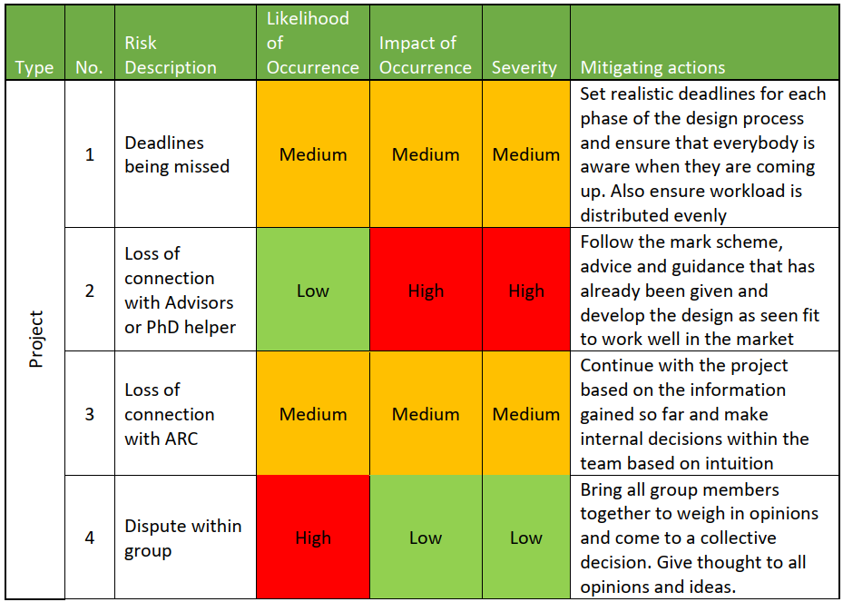
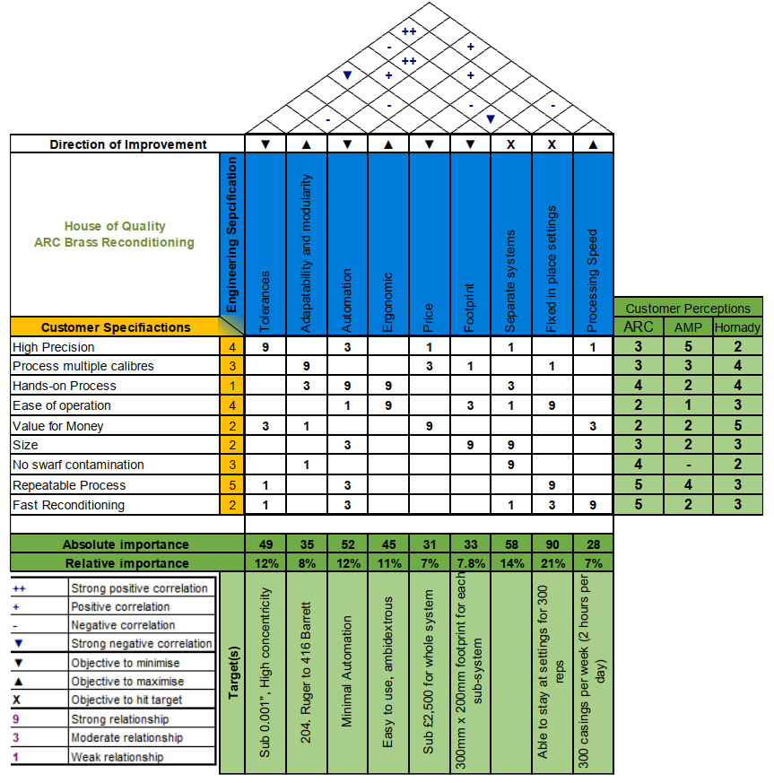
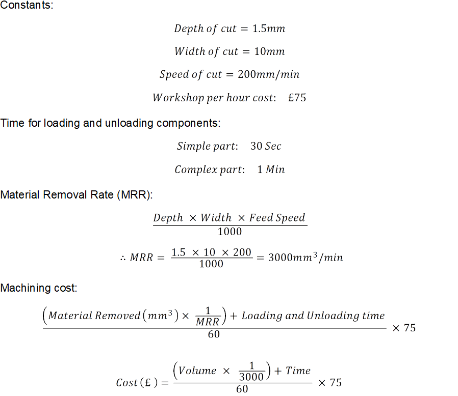
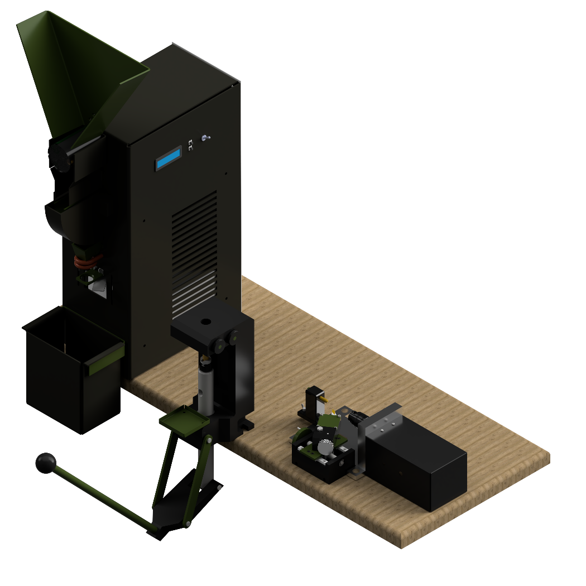
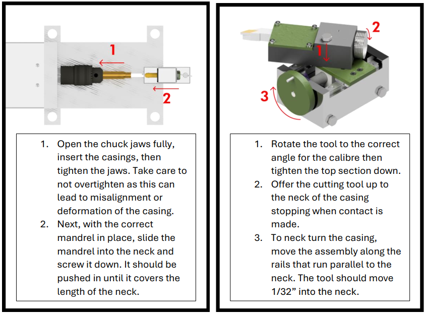
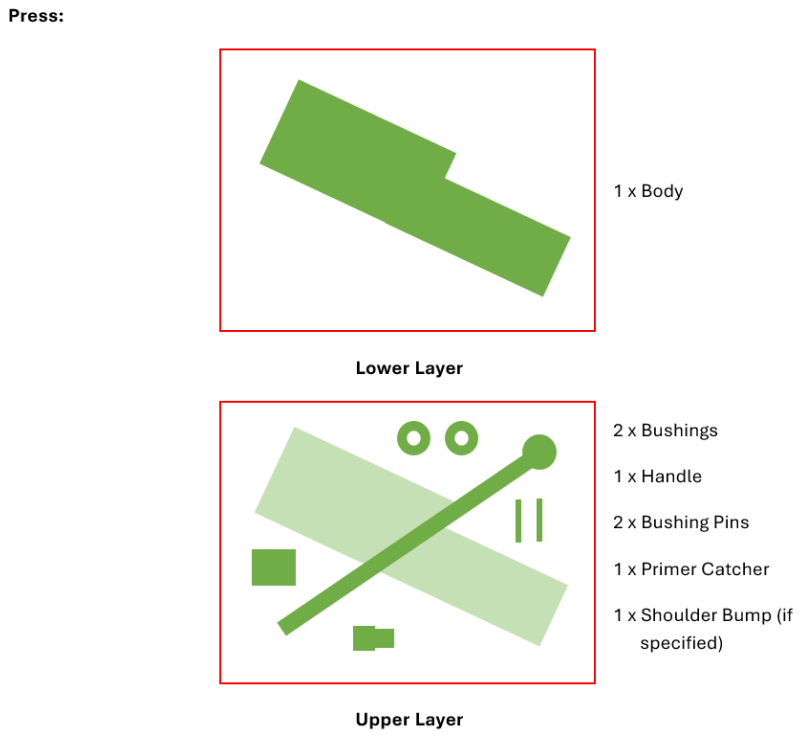

Group Business Design Project
A Background View:
In my second semester of my first year on the Integrated Design Engineering program I completed a 12 week long group project in partnership with the University of Bath's industrial connections. The industrial partner we were working with was ARC Ballistics, a company that specialises in created state of the are equipment for sports shooting. They tasked us with the project to:
"Design a system for automated precision reloading for target shooting."
Within this project there were multiple submissions that required different elements of engineering and business knowledge to be considered. Therefore, within the group, roles were assigned with myself becoming the project lead. This meant that I would take less of a focus on the detailed design aspects and look more into the contextual design of the submission package as a whole and ensure the group is organised and on track.
The submission package mentioned was broken down as follows: Systems and Integration Work (Mine), Press Design Report, Annealer Design Report and Trimmer/Turner Design Report. These pieces of equipment are all used in the process of remanufacturing the brass casings used in the high end sports shooting world. A video example of how these items are used can be found here (note the design of this equipment will vary to the equipment we designed):
The Project:
Initially as the project lead it was important for me to prepare as best as I could for the project. A big part of this for me was to create a risk register to reduce the chances of problems arising and to ensure that I was prepared for as many eventualities as possible to avoid coming up with solutions on the fly. These were split into Project, Technical and Business sections, some of which can be seen below:
Additionally as this project considers not only the design aspects but also business aspects it was important to complete some market research to allow the direction of the project to be identified. A House of Quality diagram was used for this as seen below to allow targets to be generated and prioritised.
With the design direction identified and the project well underway with risks accounted for, customer requirement research was undertaken and a specification was drawn up:
- Modular system to allow targeting of high- and low-end customers.
- Ability to process 300 casings per week spending approximately 2 hours a day running.
- Anneal, De-cap, Resize, Trim and Neck Turn cases between the calibres of 204 Ruger and 416 Barrett.
- Ability to Trim and Neck Turn to at least 0.001" resolution.
- Concentrically line up ram and die throughout the press stroke.
- Should fit on standard bench tops with each subsystems footprint being around 500*300mm.
- Plus many more...
It was worth noting that UK gun control laws were disregarded for this project as the only controlled piece of equipment are the primers placed in the ends of the casings, something this project does not cover.
As Project Manager there wasn't much concepting work to be completed as all of the design work packages were assigned to other group members. One of the concepting decisions that I needed to make was whether to use a magazine for the casings as they are being processed.

While using a magazine would increase the speed with which casings can be processed it would drastically increase the number of moving parts and therefore accuracy. After consulting a target shooting forum it was found that accuracy was a far more important attribute than speed so the concept of a casing magazine was dropped.
Project Proposal:

After concepting had been completed for each of the separate work packages they were brought together in to one cohesive concept design for the system. As each station is completely separate the modularity specification point could be ticked off and this concept provided us with a Unique Selling Point as no other company in the market sold all three pieces of equipment at the time. This concept was approved by ARC Ballistics so the project was advanced into it's detailed design phase.
Detailed Design:
In order to ensure this phase of the project was kept on track I employed multiple methods. Firstly, I used a Gantt chart to keep track of all of the specific tasks that were required from my work package as well as for submissions required. Secondly, I used work breakdown structures and issued one to each of the group members. These not only helped me ensure that the project was kept on track but also allowed group members to check in on each others progress if they were waiting for a certain aspect of another's design to be completed.
As a big factor for our client, ARC, was for the products we were designing to be competitive within the target shooting market it was important to accurately calculate potential machining costs. For this I developed an equation that was to be used by all members of the group ensuring all costs were equivalent:
The render below depicts the detailed design of each of the subsystems within the entire casing reconditioning system.
We found of writing up a commercial viability report that our products, as a whole, were competitive in the market and it was only the press which fell behind other brands in terms of value.
In order to ensure that that designs were as complete as possible and no detail was being forgotten I created UML system diagrams for each of the subsystems which allowed me to verify alongside the group member in charge of each section that it would function as expected. Additionally, I created a fault tree for each of the subsystems again to assist the group member in charge of that work package in designing out failures.
As there was no work needed in the integration of each of the subsystems into one packages which was typical of this module at the university, I opted to create and design some more contextual elements of the system.
Firstly, I designed a set of instructions that would allow even a novice to understand how to use the equipment in a safe and effective manner, some of which seen below:
Secondly, I ventured into how the packaging could be designed and what materials should be used to protect the products during transport. This led to layouts being created for each of the packages, which were modular to match the system.
Finally, off the back of specifying materials for packaging it was important to conduct an Eco-Audit to access how much embodied energy and carbon was being produced as well as where in the product lifecycle this was coming from. This would not only be informative but could also act as a guide on where to improve if the project was taken further.
Comparing to the design specification at the end of the project it was clear that many of the important points had been met and often where they hadn't there was a good reason.
Also I especially found it useful to step back and access how the project went from a management point of view. While overall it was a great success there were a few problems, such as absences and disagreements, that arose so reflecting on these meant that in the future I would be able to avoid them or manage them in a more effective manner.